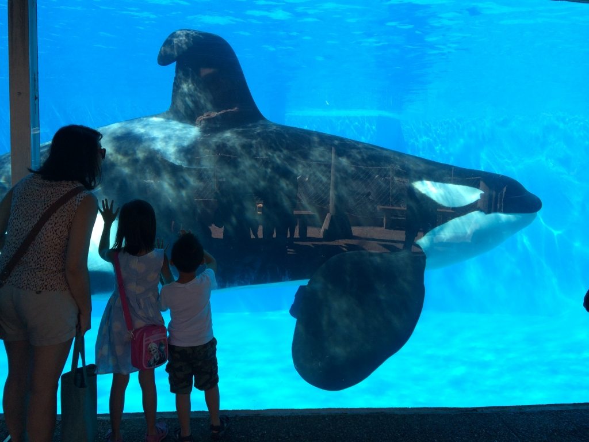

SeaWorld is the famous marine animal amusement park that shows the amazing obedience of killer whales. Have you ever wondered "What are the animals like when they aren't performing?"
Well, I can tell you this, they aren't happy.
"SeaWorld of Hurt: Where Happiness Tanks," a PETA campaign, shows explicit pictures of killer whales floating around bored because they aren't mentally stimulated. They also slam themselves into the glass and metal bars surrounding the tanks due to them having such a small swimming space.
Killer Whales are used to the vast reaches of the ocean and swimming up to 100 miles a day, not some small enclosed space where all they can do is swim in an endless circle.
The whales are unhappy and stressed, as marine veterinarian Dr. Heather Rally observed after viewing a SeaWorld show. One Orca, Ikaika, "swam to the center of the pool and proceeded to lie motionless at the surface, occasionally lifting their heads and opening their mouth as if swallowing air." She added, "This behavior lasted for at least 15 minutes as the public was cleared out of the stadium.
This is unhealthy behavior for an Orca because they are usually in motion and remain under water 95% of the time. After being separated from his family he was shipped to MarineLand in Ontario, Canada, and was used as a breeding whale for many years. After being given to SeaWorld, he was given drugs to "mellow" him out and suffered from various physical ailments, including broken teeth and chronic infections.
Does that sound happy and healthy to you?
Dr. Rally continues by stating "There is also evidence to suggest that the conditions of captivity are responsible for the high sightings of collapsed dorsal fins in this population, including activities such as spending abnormally long periods of time at the surface in direct sunlight and constantly swimming in small circles."
